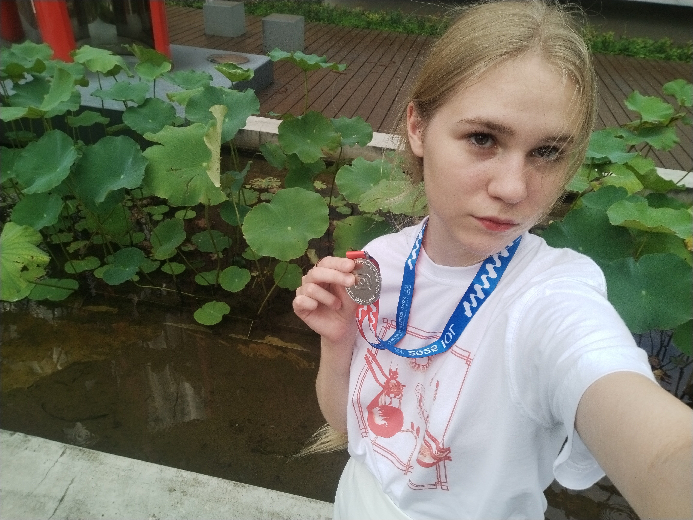
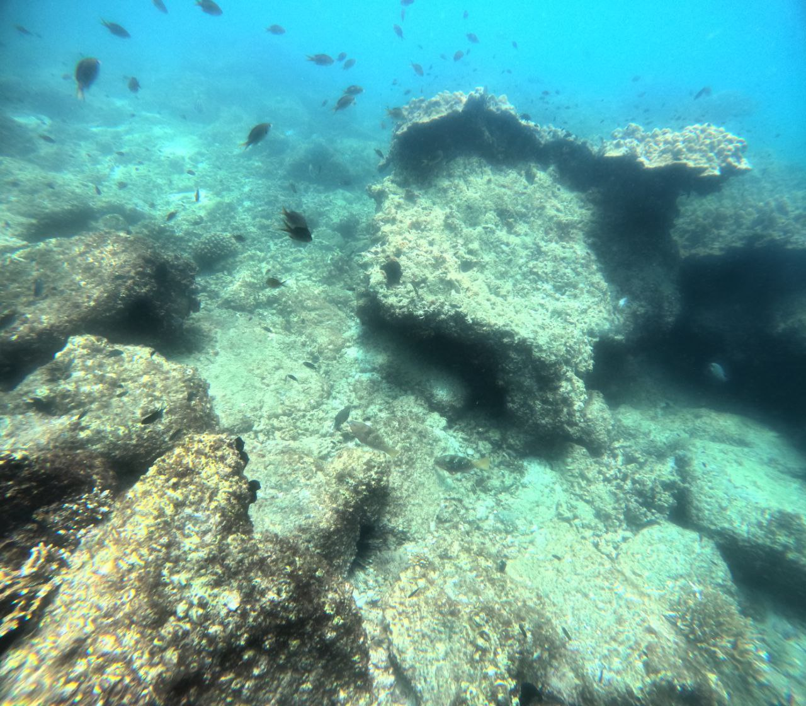
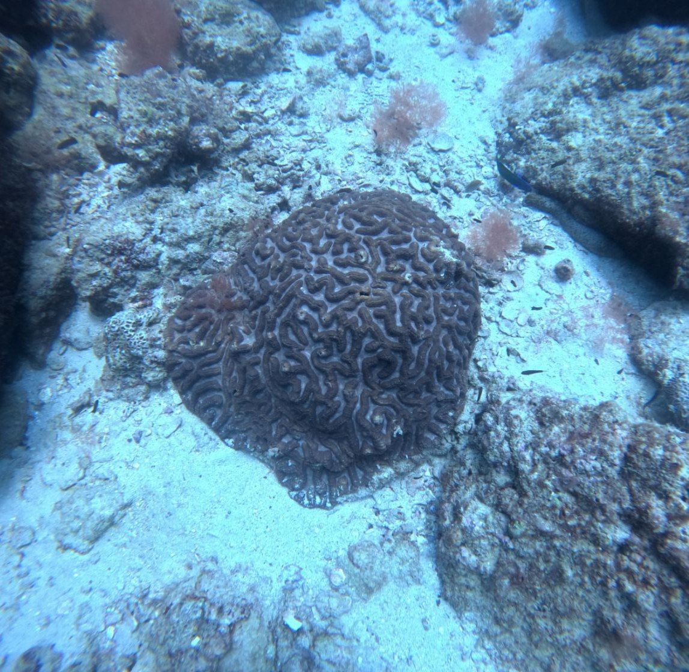

Дарья Кукшинова
Я не всегда такая претенциозная, честно!! Я просто не умею рассказывать о себе

На самом деле у меня много разных хобби, которые часто меняются, но список наиболее сильных интересов какой-то такой:
Моя любимая тема в искусстве — трансцендентность. Наверное, каждый задумывался о том, что во вселенной существуют вещи, находящиеся за гранью человеческого восприятия и понимания. Прикоснуться мы к ним можем только косвенно — например, мне нравится, как через призму художественной литературы это пытались сделать поэты-символисты или Г.Ф. Лавкрафт.
Несмотря на то, что трансцендентный мир не поддается познанию, хочется верить, что наш все-таки познанию поддается)), поэтому я хочу в будущем расширять границы известной человечеству информации.

В мои научные интересы в основном входят нейро- и психолингвистика, а также другие когнитивные науки.
